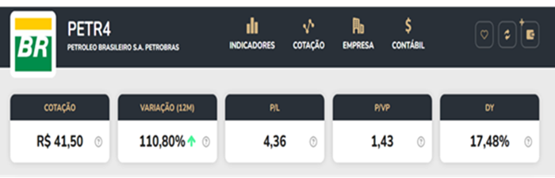

- Por Leandro Henrique da Silva
No atual cenário, o debate entre a privatização e a manutenção das empresas estatais está em destaque. Enquanto o mercado argumenta a favor da privatização visando eficiência e competitividade, grupos como sindicatos e políticos progressistas defendem a manutenção das estatais para proteção do interesse público e acesso equitativo aos serviços essenciais.
É esse jogo de forças que move o mundo. Creio que as empresas estatais são importantes instrumentos de desenvolvimento econômico e social, mas também é preciso aprimorar sua gestão e eficiência, considerando a ganância e corrupção, defeitos de fábrica humano há milênios.
Agora, eu sempre noto uma coisa interessante: o povo brasileiro ainda não descobriu que ele mesmo pode ser sócio dessas empresas bem conhecidas há décadas e, ainda, receber parte de seus lucros milionários ou bilionários. Apenas cerca de 2 em cada 100 brasileiros são acionistas de empresas no Brasil.
Entretanto, quais as vantagens de ser acionista das empresas no Brasil, especialmente, estatais? É isso que vamos ver agora.
Estabilidade, Segurança e Ganhos Maiores
Uma das vantagens de ser sócio de empresas estatais é a estabilidade e segurança proporcionadas pelo respaldo governamental. Empresas como o Banco do Brasil são exemplos claros disso. A empresa tem mais de 200 anos! Mesmo em tempos de crise econômica, essas empresas continuam operando e oferecendo serviços essenciais à população.
Por exemplo, em novembro de 2022, comprei ações do Banco do Brasil por 29 reais. Em fevereiro de 2024, elas já estavam a 60 reais! Isso equivale a pouco mais de 100% de valorização. Para ilustrar a alta rentabilidade, imagine que você depositou 1000 reais na poupança. Quanto tempo seria necessário para esse dinheiro dobrar de valor, ou seja, atingir 2000 reais?
Vamos considerar uma taxa média de 6%, estou sendo bem otimista. Clique na imagem:
Levaria cerca de 12 anos na poupança! Enquanto que nas ações isso ocorreu com apenas 1 ano e 2 meses. Isso tudo sem contar os dividendos pagos pelo Banco, isto é, a parte de seus lucros que é direito dos acionistas.
Proteção do Interesse Público
As empresas estatais muitas vezes têm um compromisso maior com o interesse público do que as empresas privadas, que visam principalmente ao lucro. Um exemplo emblemático é a Petrobrás, que desempenha um papel crucial na garantia da soberania energética do país e na promoção do desenvolvimento nacional.
Ao ser sócio de empresas estatais como a Petrobrás, os investidores têm a oportunidade de contribuir para o desenvolvimento do país, ao mesmo tempo em que potencialmente obtêm retornos financeiros.
O maior sócio da Petrobrás é o governo, pois ele possui mais de 50% das ações ordinárias, que tem direito ao voto. Além disso, essas empresas são regidas pela Lei das Estatais (Lei nº 13.303 de 30/06/2016), que trata, dentre outras coisas, da governança das empresas públicas, geralmente monopólios do Estado.
As ações da Petrobrás custam 41,50 reais neste momento, mas já valorizaram mais de 100% e ainda pagaram 17,48% de dividendos no último ano. Isso significa que 1000 reais investidos teriam retornado 170 reais aproximadamente em um ano. Enquanto a poupança renderia pouco mais de 70 reais sem descontar a inflação.

Fonte: https://investidor10.com.br/acoes/petr4/.Creio que com esses dois exemplos você deve ter mudado de opinião em relação às empresas estatais. Vamos ver mais características.
Acesso a Serviços Essenciais
Manter empresas estatais garante o acesso da população a serviços essenciais, como água, energia e saneamento básico. Empresas como Sanepar e Copasa desempenham um papel fundamental nesse sentido, fornecendo serviços de abastecimento de água e tratamento de esgoto em suas respectivas regiões.
Por exemplo, conheço a Sanepar há mais de 40 anos, pois sou do Paraná. Uma empresa que nunca deu prejuízo e ficou muito tempo com o preço das ações variando de 3 a 3,50. Com certeza, comprei um pouco e hoje já está a 5,60 com lucros crescentes!
A COPASA é outra empresa de saneamento de Minas Gerais que paga ótimos dividendos, inclusive extraordinários, pois o maior acionista é o governo mineiro. Também é uma ótima empresa para se estudar e ser sócio.
Essas e outras empresas não apenas oferecem oportunidades de investimento, mas também contribuem para a melhoria da qualidade de vida da população e geração de riqueza do país.
Sendo Sócio pela Bolsa de Valores
Além disso, investir em empresas estatais por meio da bolsa de valores oferece uma série de vantagens, como liquidez e diversificação de portfólio. Isso quer dizer que o seu dinheiro não ficará parado nas mãos dos Bancos, enquanto eles ganham juros exorbitantes em cima de suas economias.
Vimos que os acionistas têm a oportunidade de participar do crescimento dessas empresas e potencialmente obter retornos financeiros atrativos ao longo do tempo.
É importante destacar que, no Brasil, ainda há um grande desconhecimento sobre o poder dos investimentos em ações e seu papel na geração de riqueza para a sociedade. Muitos brasileiros ainda associam a bolsa de valores a um ambiente reservado para os mais ricos e experientes, quando na verdade, ela oferece oportunidades de participação nos lucros das empresas para qualquer pessoa que esteja disposta a investir.
Vejo que ao se tornar sócio de empresas estatais listadas na bolsa de valores, o investidor brasileiro não apenas tem a oportunidade de buscar estabilidade e retorno financeiro, mas também contribui para o crescimento econômico do país.
Ao investir na geração de riqueza por meio da participação no mercado de capitais, os brasileiros podem ajudar a impulsionar o desenvolvimento e a distribuição de recursos de forma mais equitativa na sociedade.
Essa percepção do potencial dos investimentos em ações com o intuito de ser sócio de empresas estatais pela bolsa de valores é também uma forma de obter benefício individual, mas por outro lado pode ter um impacto positivo e significativo no crescimento econômico e no bem-estar social do Brasil como um todo.